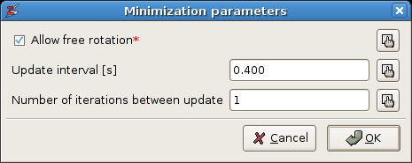
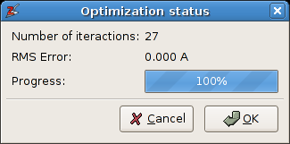

4.5. Working with springs¶
A given geometrical alignment of two rigid molecules - in terms of interatomic distances - is often hard to obtain directly via the rotation and translation functions in Zeobuilder. As shown below, one can easily approximate relative orientations with the interactive tools, but they are not suitable for very precise positioning. One encounters similar difficulties when connecting molecules, as if a chemical reaction took place. Such tasks become even more challenging when more than two molecules are involved. For this type of work, Zeobuilder introduces Spring objects, which are suitable for accurate positioning. Springs complement the interactive tools in the model building process.
The applications of springs always follow a fixed work flow: The first task is to put the distinct molecules at an initial estimate of the final configuration. This can be a very rough guess. Then, one connects two ore more molecules by springs with predefined rest lengths. Finally, a rigid-body optimizer searches for the energy minimum of the selected springs in terms of molecular rotation and translation. In this context, the word ‘molecule’ is actually too restrictive: For the optimization algorithm, a rigid body consists of a reference frame and all its contents. This reference frame can contain anything: boxes, points, sub frames, and even multiple molecules that have a fixed relative orientation.
4.5.1. A basic example: aligning two THF molecules¶
Consider the dimer of two THF molecules depicted in the following figure:
The four prescribed distances in the THF dimer.
This dimer is hypothetical, but suppose that we want to prepare this structure for further research. A THF molecule has two types of carbon atoms that differ in their chemical environment. In this section, we use the label ‘CA’ for the carbon atoms that are directly connected to the oxygen. The other carbon atoms are labeled as ‘CB’. Suppose that we are interested in the configuration where the following four intermolecular distances are fixed:
- The distance from the oxygen atom in the first THF molecule to both CB atoms in the second THF molecule is 4Å.
- The distance from the oxygen atom in the second THF molecule to both CB atoms in the first THF molecule is also 6Å.
We will now go through the instructions to create this dimer with Zeobuilder, starting from a single THF molecule. The internal coordinates of the THF molecule are not altered.
- Load the model thf.zml. It contains a single THF molecule in the global reference frame.
- Select all the children of the global reference frame, not the global reference frame itself. The simplest way to make this selection consists of two steps:
- Select the global reference frame in the tree view.
- Push the Page down button on the keyboard, or activate the menu function Select -> Children.
- Activate the menu function Object -> Arrange -> Frame or press Ctrl-F to place the THF molecule in a separate reference frame.
- Rename this reference frame from Frame to THF:
- Select the frame.
- Activate Object -> Properties. Enter the new name in the popup dialog and click OK.
- Select the frame and activate the menu function Edit -> Duplicate, or press Ctrl-D. By default, the duplicate is placed at exactly the same position as the original molecule.
- Select one of the two THF frames (in the tree view) and use the interactive translate and rotate function in the 3D view to approximate the dimer sketched above. Some exercise is required to do this fluently. Your Zeobuilder window should be similar to following figure:
The initial configuration of the THF dimer.
Note
For new users, it will seem very odd that the function Edit -> Duplicate places the copy in overlap with the original object. There are several motivations for this implementation:
- It is not trivial to develop an algorithm that is clever enough to find a good position for the duplicate, without consuming too much CPU time.
- A simple (but predictable) feature is more user-friendly than a clever (but unpredictable) one.
- Starting from an exact overlap, one can use the functions in the sub menu Object -> Transformation to define a precise relative position and orientation between the duplicate and the original. For some applications, this is a practical technique.
Now we will align the two molecules precisely by imposing the four intermolecular distances.
Repeat the following steps for the four atom pairs:
- Select the two atoms.
- Add a spring by activating the function Object -> Connect -> Spring.
- Set the rest length of the spring via the menu function Object -> Properties.
Select all the springs and run the menu function Object -> Builder -> Optimize springs. A dialog window will appear. Enter the same parameters as shown here:
The parameters for the spring optimization.
The option Allow free rotation can be disabled, i.e. the rigid bodies will not be rotated during the optimization. The two other parameters determine how the intermediate results are visualized. Click OK.
A second dialog window pops up that reports the optimization progress:
The progress dialog of the spring optimization.
The optimization should take only a fraction of a second. When convergence is reached, one clicks the OK button to accept the final structure, or Cancel to restore the initial situation. The final model is displayed below:

The final configuration of the THF dimer.
Save your work:
- Execute File -> Save as and store the result as thf_dimer_aligned.zml. This file contains the complete model, including the springs.
- Execute File -> Save as again, but use a different filename: thf_dimer_aligned.xyz The .xyz format is an input file format for many ab initio and molecular mechanics simulation software. All atom coordinates in the .xyz file are given with respect to the global reference frame.
- Optionally execute File -> Save as with thf_dimer_aligned.psf as filename. This file describes the molecular topology, i.e. bonds, bending angles, and so on. .psf files are often required as an additional input for molecular mechanics simulations and for the analysis of molecular dynamics simulations. For example, the [[Tracks]] code often relies on topology files.
For this simple example, one could have used other software to create the dimer with the prescribed distances. Most ab initio and molecular mechanics codes support constraints and/or restraints to fix the four distances; For the THF dimer, the extra computational cost for evaluating a potential energy of the system due to physical interactions is very cheap on recent computers. The situation changes completely when one wants to compose molecular models from larger building units. The rigid body optimizer in Zeobuilder does not compute physical interactions, but only considers the springs. This is an extreme case of coarse-graining. As a side effect, molecules are allowed to overlap during the rigid-body optimization, and hence the global minimum is easier to find. Zeobuilder offers the additional advantage that the whole procedure takes place in a user-friendly environment.
4.5.2. The condensation of two zeolite building blocks¶
The previous section discussed an example where two molecules where aligned into a non-bonding configuration. In this section, we will discuss some extra features that facilitate the applications of springs in various situations, and we will apply these concepts to condense two zeolite clusters into a single larger cluster.
4.5.2.1. The condensation algorithm¶
The following figure illustrates the geometrical abstraction of the condensation reaction.

In the case of zeolite clusters, the hydrogen atoms of the terminating hydroxyl groups are hidden for reasons of clarity. This concept is easily generalized towards arbitrary elimination reactions. The scheme consists of three elementary steps:
- One selects a set of atom pairs that will undergo a condensation reaction.
- The spring optimization is used to translate and rotate the building blocks, as to bring each pair of atoms into overlap.
- It is not always possible to let all atom pairs coincide exactly. The (approximately) overlapping atom pairs are replaced by a single atom at the average coordinate of the original atoms.
4.5.2.2. Step-by-step instructions¶
The instructions below will join two sodalite cages along their hexagonal faces. The atom pairs that will join to form new Si-O-Si bridges are indicated in this figure:
Two sodalite cages that will be connected along their hexagonal faces. The pairs of hydroxyl groups that will undergo a condensation reaction, are marked with blue ellipses.
The starting point is a single sodalite cage model.
Open the model sodalite_cage.zml.
Select all the hydrogen atoms and remove them with the function Edit -> Delete. The bonds to these hydrogen atoms are removed automatically.
Arrange the sodalite cage in a dedicated reference frame. Duplicate this frame and translate it to a new position. By now, you should now how to do this.
We will now connect each pair of oxygen atoms (see figure above) by a spring. When many springs are involved, as in this example, one can take advantage of the Geometric sketch tool:
Click on the first toolbar button and select the Geometric sketch tool.
A tool window will appear as in figure A5.8. Select spring from the connect with list.

The tool window of the Geometric sketch tool.
Now connect the oxygen pairs by dragging with the left mouse button in the 3D view from the one oxygen atom to the other .
When done, select the Selection picker again by clicking on the first toolbar button.
Select all spring objects (in the tree view).
Activate the menu function Object -> Builder -> Optimize springs. The (default) rest lengths of the springs is zero, so the optimizer will bring each pair of oxygen atom into overlap.
Make sure the springs remain selected. Activate the menu function Object -> Builder -> Merge atoms connected by springs. This will remove the spring objects, and each pair of atoms is replaced by a single atom at the average position of the two original atoms.
Finally, one must restore the hydrogen atoms:
- Select the global reference in the tree view.
- Activate the menu function Object -> Molecular -> Saturate with Hydrogens.
The end results is displayed below. It is clear that the newly formed oxygen bridges are too curved. When this ‘initial’ structure is used as an input for an energy minimization, these Si-O-Si bends will become less curved.
Two sodalite cages connected along their hexagonal sides.
4.5.3. Technical details¶
Warning
Take a break and drink a some of coffee before reading this section.
When working whith springs, keep in mind the following rules:
Only the selected springs will be optimized.
Springs should always connect sub children of different reference frames.
Before the actual optimization starts, Zeobuilder will determine the common parent frame of the objects that are connected by the selected springs.
The term direct child is used here as the short name for a direct child of the common parent frame.
The optimization code will only translate (and rotate) direct child frames.
There are two types of springs:
- A spring that connects two objects that are sub children of direct child frames: During the optimization both end points of this spring can be moved (by rotation and translation of the direct child frames that contain the end points).
- A spring that connects a direct child object with an object in a direct child frame: The position of the direct child object will not change during the optimization.
The location of the spring objects in the tree structure is not relevant.
4.5.4. Exercises¶
- Connect two sodalite cages (sodalite_cage.zml) along the square faces.
- Place a pentane molecule in the center of a straight channel of a Sodalite-1
unit cell. Make sure the pentane molecule is aligned with the straight
channel. You will need these files:
(sodalite1.zml)
and
(pentane.zml).
Tip: The center of the Sodalite-1 unit cell does
not lie in the middle of a straight channel. This is not the most practical
situation for this exercise. Define a new origin as follows:
- Reset the current view with the menu function View -> Reset.
- Select the two oxygen atoms that are the closest to the rotation center of the model, i.e. the gray cross.
- Activate the menu function Object -> Add -> Point at average. This new point coincides with the rotation center. It is selected automatically, do not change the selection.
- Change the coordinates of this point with Object -> Properties. Go to the Translation tab and change the t.z value to zero. Click OK The point will lie at the center of a straight channel. Make sure the point remains selected.
- Activate the menu function Object -> Transform -> Define origin. The contents of the unit cell will be translated as to bring this point in the origin of the global reference frame. One of the two straight channels is now located at the center of the unit cell.
- Select the global reference frame and apply the function Object -> Unit cell -> Wrap cell contents, or press Ctrl-W.